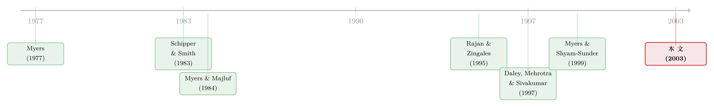

公司利润越高，债反而越多？——一场被「拆公司」洗掉干扰项的资本结构实验
本文读的是 Mehrotra, Mikkelson & Partch (2003, Review of Financial Studies)：他们用 98 起公司分拆 (spin-off) 构造出一组「同根同源」的母子公司，比较两者分家后的杠杆差异，发现利润越高、行业现金流越稳、固定资产占比越大的那一家，分到的债越多。其中「利润与杠杆正相关」这一条，与几乎所有横截面证据相反——而它恰恰是权衡理论 (trade-off theory) 预言、却长期找不到证据的那一条。
1 一桩三十年的悬案
先说一个几乎所有学过公司金融的人都会同意、却几乎没人能拿出证据的「常识」：一家公司利润越高、现金流越稳，它就越应该多借钱。道理很朴素——债务的好处是利息抵税，坏处是还不上钱会破产。利润高、现金流稳的公司，既有更多税可抵，又更不容易违约，那它当然该多上杠杆。这就是权衡理论的核心直觉。
可问题来了。当人们真的去数据里找这条关系时，看到的几乎总是反过来的：利润越高的公司，杠杆越低。Long & Malitz (1985)、Titman & Wessels (1988)、Rajan & Zingales (1995)……一篇接一篇，无一例外。Myers (1993) 干脆把这条「利润与杠杆的强负相关」称作「反对静态权衡理论最有力的证据 (the most telling evidence against the static trade-off theory)」。
于是大家转向了另一套解释——啄食顺序理论 (pecking order theory)。Myers & Majluf (1984) 说，由于信息不对称，外部融资是有「柠檬折价」的，所以公司偏好内部资金：先用留存收益，不够了再借债，最后才发股。这套逻辑下，利润高的公司因为攒得下钱，自然就少借债。负相关，完美解释。（关于啄食顺序在数据里的成败，可参见《啄食顺序理论的滑铁卢：当「该发债」的公司，偏偏去发了股》。）
但这里藏着一个让所有人头疼的死结：横截面数据本身没法把两套理论分开。 你看到利润和杠杆负相关，既可以说是啄食顺序（高利润→多留存→少借债），也可能是权衡理论被一堆噪声盖住了。Myers & Shyam-Sunder (1999) 专门论证过这个识别困境。更麻烦的是，即便公司心里有一个「目标杠杆」，信息问题、调整成本、甚至管理层的惰性，也会让它长期偏离这个目标——你在某一个时点观测到的杠杆，未必是它「想要」的那个。
接着，一个自然的问题是：有没有一种场景，能让我们把啄食顺序的影响和调整成本一起摁掉，只留下权衡理论想说的那条因果，干干净净地看一眼？
这篇论文的回答是：有。去看公司分拆。
2 为什么「拆公司」是一块完美的实验台
在一次分拆里，管理层把一家公司的某块资产剥离出去，成立一家新的、独立上市的子公司，然后把新公司的股份按比例、以股票股利的形式分给原股东。一个被反复引用的例子是 Parrino (1997) 研究的 1993 年万豪 (Marriott) 分拆——管理层为两家资产性质迥异的公司，刻意设计了截然不同的资本结构。
关键就在「设计」二字。分家的时候，管理层不仅要分资产，还要分债务：哪些债留给母公司，哪些债塞给子公司。这是一次显式的、主动的资本结构选择。
而真正精妙的一步在于：母公司和子公司，分家之前是同一家公司。 它们共享同一段融资历史，这段历史里所有的啄食顺序痕迹——什么时候发过股、攒下过多少留存收益——是两者共同的。所以，如果你不去比较单个公司的杠杆水平，而是比较「分家后这一对公司之间的杠杆差异」，那么这段共同历史就被差分掉了。
这就是全文的方法论命门：做差。 用子公司的杠杆减去母公司的杠杆，啄食顺序的历史效应在相减中消失了。剩下的差异，只能来自两家公司当下的资产特征不同——利润、现金流波动、资产可清算性、税务地位。这恰恰是权衡理论说了算的地盘。
不止如此。一般公司的杠杆之所以难解读，是因为调整成本会让它长期停在「非目标」状态。但分拆里的资本结构是伴随分拆这个动作一次性确定的，不存在「慢慢漂移偏离目标」的问题。换句话说，这次分家给出的杠杆，更接近管理层心目中那个「该有的」杠杆。
于是反转出现了：在这个被洗干净的环境里，作者真的看到了那条「失踪」已久的正相关。
3 他们到底量了什么
先把因变量说清楚。论文定义的杠杆比率是：
$$ L = \frac{D_{LT} + D_{CL} - C}{A - C} $$
其中 \(D_{LT}\) 是长期债务，\(D_{CL}\) 是流动负债中的债务，\(C\) 是现金及等价物，\(A\) 是账面总资产。之所以从债务里减掉现金、又把现金从分母里剔除，是因为现金储备会抵消财务杠杆的效果。作者主要用账面口径而非市值口径——一个很实际的理由是，市值杠杆会和「市值/账面比」「现金流/资产」这些解释变量之间产生机械相关；而且会计准则保证了分拆前公司的账面总资产，恰好等于分家后母子两家账面资产之和，做差时刚好对得上。
然后是四个由「价值最大化（权衡理论）」推出的解释变量，全部以「母 − 子之差」的形式进入回归：
- 自由现金流 (free cash flow)：经营收入加折旧，除以净现金后的资产。现金流越足，越扛得住利息、越不容易违约，应分到越多债。
- 现金流波动 (variability of cash flows)：由于无法可靠观测子公司分家前的历史业绩，作者用一个巧妙的代理——把母、子各自匹配到
Compustat里同三位 SIC 码的所有公司，取这些同行公司经营现金流/净现金资产比的标准差中位数，最多用分拆前 10 年的数据。波动越大，违约与外部融资的概率越高，应分到越少债。 - 资产可清算性 (liquidation costs)：用「固定资产/总资产」和「市值/账面比」两个代理。这接的是 Myers (1977) 的论点——清算时贬值越少的资产（如厂房设备），财务困境的预期成本越低，越能支撑债务。
- 税务地位 (tax status)：借 Graham (1996) 的思路设一个虚拟变量，若分拆后首个财年末公司没有税务亏损结转、且税前利润为正则取 1。税率越高，利息抵税越值钱，应多借债。（作者也老实承认，这个税务代理并不理想，因为它本身就受公司现有债务水平的影响。）
另一组变量来自「管理层自利」的视角：分拆后的公司是否留用了原 CEO、CEO 与全体高管董事的持股比例、董事会规模与构成、以及分拆前一年内公司是否成为过控制权事件（要约收购、反收购防御、大宗股权购买）的目标。如果资本结构是管理层为私利而设计的，那么留用原 CEO 的那家公司应该杠杆更低（怕还债压力、怕丢饭碗）——除非他们更怕被收购，那符号又会反过来。
样本是 1979–1997 年的 98 起分拆，初始名单来自 Daley, Mehrotra & Sivakumar (1997)，1991 年后的部分由《华尔街日报索引》和 Securities Data Corporation 补齐。母公司分拆前资产的中位数高达 17.06 亿美元（$1706 million），中位数把 22% 的资产分了出去，涵盖 83 个不同行业——样本足够大、足够分散。
4 核心结果：那条「失踪」的正相关回来了
先看一个有意思的「零结果」。如果你只做最朴素的单变量比较，母公司和子公司分家后的平均杠杆几乎没有差别：账面杠杆母公司 0.19、子公司 0.18，配对差异检验的 p 值是 0.49，正负差异各占 0.56/0.44。也就是说，平均而言谁也没系统性地比谁更高杠杆。
这恰恰说明：真正的故事不在平均值，而在横截面里「谁分到了更多债」。 一旦控制住同行业杠杆水平，把杠杆差异回到资产特征差异上，三条关系稳稳浮现：
- 固定资产占比越高的那家，分到的杠杆越多。 这与 Myers (1977) 的预言一致——可清算价值高、困境成本低的资产支持更多债务。
- 利润（自由现金流）越高的那家，分到的杠杆越多。 这就是那条逆天的正相关。在一个洗掉了啄食顺序的环境里，利润和杠杆终于正相关了。
- 行业经营现金流波动越大的那家，分到的杠杆越少。 波动即风险，风险即少债。
第二条是全文的灵魂。它直接顶撞了 Baskin (1989) 那句斩钉截铁的论断——「静态最优资本结构理论在解释公司行为上几乎无能为力」。作者的解读是：横截面研究里之所以总看到负相关，不是因为权衡理论错了，而是因为信息问题、调整成本和管理层惰性，把公司从目标杠杆上拽走了，把这条本该为正的关系搅成了噪声甚至搅反了符号。一旦你找到一个能绕开这些干扰的场景，权衡理论想说的话就清清楚楚。
而对「管理层自利」那一组变量，结论是一句干脆的没有：CEO 是否留任、高管董事持股、董事会规模与构成，统统解释不了杠杆差异；留用原 CEO 的公司也没有系统性地选择异常高或异常低的杠杆。作者由此拒绝了「资本结构服务于管理层私利」的代理理论。
5 一个绕不开的担忧，和作者的回应
读到这里，一个聪明的读者会立刻起疑：会不会根本不是管理层在「优化」，而是债务条款的约束？母公司原有债务里的契约、或者以特定资产作抵押的安排，可能让某些负债天然只能跟着特定的有形资产走。如果是这样，那「固定资产多→债多」就成了一个机械的会计绑定，而非什么权衡理论的最优选择。
作者用两招回应：其一，专门去看没有以特定资产作担保的债务的分配——如果结论是抵押绑定造成的，这部分自由债务就不该呈现同样的模式；其二，跟踪杠杆随时间的变化，因为分拆当下的融资约束，过些年理应松动。两项检验都支持：结论不是被分家时的融资约束「锁」出来的。
6 文献脉络
把这条线索捋一遍。源头是两套针锋相对的资本结构理论：Myers (1977) 奠定了权衡理论里「资产可清算性决定困境成本、进而决定杠杆」的逻辑，Myers & Majluf (1984) 则给出了啄食顺序理论的信息不对称基础。整个 1980–1990 年代，横截面实证（Long & Malitz 1985、Titman & Wessels 1988、Baskin 1989、Rajan & Zingales 1995）几乎一边倒地报出「利润—杠杆负相关」，被普遍读作啄食顺序的胜利、权衡理论的败绩，Myers (2001) 的综述里把这条规律称为「无一例外」。

僵局的症结被 Myers & Shyam-Sunder (1999) 点破：横截面数据天生分不开这两套理论。与此同时，分拆文献从另一条路走来——Schipper & Smith (1983) 早就注意到分拆会改变资本结构（他们报告子公司账面债务/资产比从分拆前的 0.59 降到 0.51），Daley, Mehrotra & Sivakumar (1997) 发现跨行业分拆会小幅降低合并杠杆。本文正是把这两条线接到了一起：用分拆这个天然的差分实验，去破解权衡 vs 啄食顺序的识别困境。 与之几乎同时的 Dittmar (2004) 用类似样本研究分拆中的资本结构，但聚焦于解释子公司本身的杠杆；本文的独到之处，是聚焦母子之差，从而把啄食顺序彻底移出考量，并额外检验了治理与代理变量。
至于分拆本身为何发生、是否服务于约束管理层，那是另一个故事（可参见《拆掉一家公司，是为了让老板「坐不住」》 与《拆分真能让公司投得更聪明吗？》）；本文关心的，始终是分家那一刻的「财务设计」。
7 评论与延伸（Q&A + 研究方向）
(a) 几个可能的疑问
Q：既然平均杠杆母子没差别（0.19 vs 0.18，p=0.49），凭什么说权衡理论成立？
因为权衡理论从不预言「子公司一定比母公司更高/更低杠杆」，它预言的是「资产特征决定杠杆」。母子谁更激进取决于谁的资产更适合负债。平均值相抵正说明样本里两个方向都有，真正的信息全在横截面的配置里——而那里的关系是显著的。
Q：这跟普通的横截面杠杆回归到底有什么本质区别？
区别在于「做差消掉了共同历史」。普通回归里，利润同时通过啄食顺序（攒钱→少借）和权衡理论（抗风险→多借）两条相反的渠道影响杠杆，净效应被前者主导成负号。母子做差后，那段决定啄食顺序的共同融资史被差分掉，只剩权衡理论的渠道，正号才显形。
Q：「利润正相关」会不会只是反向因果——债多了所以利息抵税多、所以报出来利润高？
作者的利润代理是经营收入加折旧（息税前、折旧前的经营现金流），本身不受利息费用影响，所以不是这种机械反向。这也是他们刻意回避覆盖率 (coverage ratio) 作为主指标的原因——覆盖率的分子分母都被债务分配同时污染。
Q：用「同行业公司的现金流波动」代理子公司自己的波动，靠谱吗？
这是无奈之举，因为子公司分家前没有独立的历史业绩可观测。好处是干净（不受公司自身债务选择影响），代价是测量误差——真实波动与行业中位数有偏离时，系数会被衰减。所以这条关系若显著，更可能是被低估而非高估。
Q：税务变量不显著，是不是说税盾不重要？
不能这么读。作者自己承认这个税务虚拟变量「先天不足」——它的取值部分由公司现有债务水平决定，内生性严重，信噪比低。税盾不显著更可能是代理太差，而非税真的无关。（关于税盾价值的微妙之处，可参见《税盾的价值，并不等于税盾的现值》。）
Q：样本只有 98 起、跨度近 20 年，外部效度够吗？
98 对公司、83 个行业，对一个需要手工识别分拆条款的研究算相当大了。真正的限制不是数量，而是「分拆」这个场景本身的特殊性——它发生在非财务困境的健康公司，结论能否外推到普通公司的日常融资决策，是开放问题。
(b) 几个可能的研究问题与提案
1. 把这套「做差」逻辑搬到公司债定价上
【经济故事】母子公司分家那一刻，债权人对同一批资产的风险定价被「拆」成两份。利用母子债券利差的差异，能直接检验固定资产可清算性、现金流波动如何被信用市场定价，而不必依赖股权侧的杠杆代理。 【可行性】中。需要分拆样本中母子双方都有公开债券且在
TRACE有成交记录——这会大幅缩小样本，可能只剩几十个观测，统计功效是主要障碍。
2. 外资持有人会不会改变分家时的债务分配？
【经济故事】如果母公司原本有大量外资机构持有，分拆后这些投资者对母、子两家的偏好可能不同（流动性、可投资度、治理），从而通过事前预期影响管理层如何分债。这是把「投资者基础」引入资本结构设计的角度。 【可行性】中偏低。需要分拆前后的机构持股明细（13F + 国别标识），且要论证持股结构对债务分配的因果而非相关，识别较难。
3. 分拆后杠杆向目标的收敛速度
【经济故事】本文假设分家时的杠杆接近目标。一个自然延伸是追踪此后 3–5 年母子各自杠杆如何调整——若分家时确实在目标附近，后续调整应很小；若调整很大，则说明分拆并非那么「干净」。这能直接给调整成本文献提供一个起点已知的实验。 【可行性】高。
Compustat面板即可构造分拆后多年的杠杆轨迹，纯描述性加简单的部分调整模型 (partial adjustment) 就能做，数据门槛低。
4. 现金流波动代理的改进：用结构化的行业现金流分解
【经济故事】行业中位数标准差是个粗糙代理。若能把波动拆成「系统性 vs 特质性」，可检验究竟是哪一类波动在驱动「波动多→债少」，从而辨别是违约风险渠道还是债权人—股东冲突渠道在起作用。 【可行性】高。仅需
Compustat行业面板和一个简单的因子分解，无需新数据。
8 我的判断
这篇论文最漂亮的地方，不是它的结果有多惊人，而是它的研究设计有多干净。在一个充斥着内生性与联合假设的领域里，它找到了一个近乎天然的差分实验，把困扰了文献二十年的「权衡 vs 啄食顺序」识别难题，用一招「母子做差」化解掉了大半。「利润与杠杆正相关」这一条，单拎出来就足以让人重新审视那句「最有力的反证」。
但我也有两点保留。其一，场景的特殊性：分拆发生在健康、通常很大（中位数资产 17 亿美元）的公司里，管理层有余裕从容设计财务结构；这恰恰是最接近权衡理论理想世界的环境。换句话说，论文证明的也许是「当摩擦足够小时，权衡理论成立」，而日常公司的杠杆之谜，恰恰出在那些摩擦上——这不算反驳，但限定了结论的射程。其二，测量层面的软肋：现金流波动用行业中位数代理、税务地位用一个自承「不理想」的虚拟变量，都会衰减系数；好在这只会让结论偏保守，而非虚假为正。
后续我最想看到的，是把这套差分逻辑推到信用市场：债权人如何为分家后的母子资产分别定价？利差的差异能否复现股权侧看到的「固定资产→更高杠杆容忍度」？如果能，那就是从两个独立市场对权衡理论的双重确认；如果不能，那中间的裂缝本身，又会是一个新故事。
参考文献
Alderson, M. J., and B. L. Betker (1995). Liquidation Costs and Capital Structure. Journal of Financial Economics 39, 45–69.
Baskin, J. (1989). An Empirical Investigation of the Pecking Order Hypothesis. Financial Management 18, 26–35.
Daley, L., V. Mehrotra, and R. Sivakumar (1997). Corporate Focus and Value Creation: Evidence from Spinoffs. Journal of Financial Economics 45, 257–281.
Dittmar, A. (2004). Capital Structure in Corporate Spin-Offs. Journal of Business (forthcoming).
Graham, J. R. (1996). Proxies for the Corporate Marginal Tax Rate. Journal of Financial Economics 42, 187–221.
Mehrotra, V., W. Mikkelson, and M. Partch (2003). The Design of Financial Policies in Corporate Spin-offs. Review of Financial Studies 16(4), 1359–1388.
Myers, S. C. (1977). Determinants of Corporate Borrowing. Journal of Financial Economics 5, 147–175.
Myers, S. C. (1993). Still Searching for Optimal Capital Structure. Journal of Applied Corporate Finance 6, 4–14.
Myers, S. C. (2001). Capital Structure. Journal of Economic Perspectives 15, 81–102.
Myers, S. C., and N. S. Majluf (1984). Corporate Financing and Investment Decisions When Firms Have Information that Investors Do Not Have. Journal of Financial Economics 13, 187–221.
Myers, S. C., and L. Shyam-Sunder (1999). Testing Static Tradeoff Against Pecking Order Models of Capital Structure. Journal of Financial Economics 51, 219–244.
Parrino, R. (1997). Spinoffs and Wealth Transfers: The Marriott Case. Journal of Financial Economics 43, 241–274.
Rajan, R., and L. Zingales (1995). What Do We Know about Capital Structure? Some Evidence from International Data. Journal of Finance 50, 1421–1460.
Schipper, K., and A. Smith (1983). Effects of Recontracting on Shareholder Wealth. Journal of Financial Economics 12, 437–467.
Titman, S., and R. Wessels (1988). The Determinants of Capital Structure Choice. Journal of Finance 43, 1–19.